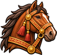
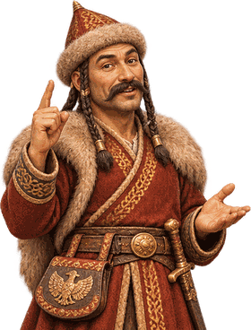

HazaVár
!
Napi
Törzsfő
1. korszak
0
Pénz · jószág
0
/ 1 000
Termény
0
Tudás

0
Ló · Kincs
0
Lakosok
+0%
Hangulat
25
1. Vándorlás · Etelköz
0 / 10
Idővonal

!
Közelednek a besenyők
Erőpróba
Felkészültség
0%
Felkészülés
!
Építés
!
Kutatás
!
Vezérek
0 / 6 felesküdött
Raktár
Bolt
Építés
Kész